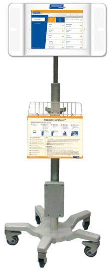
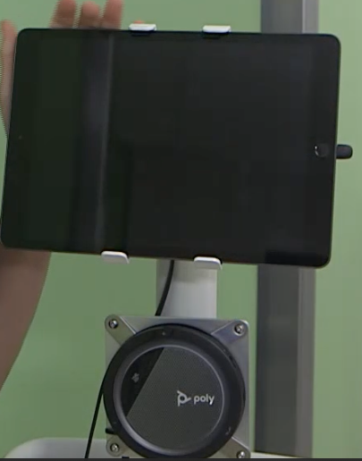
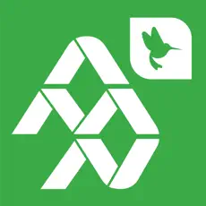

Verbal Communication
Work with an interpreter anytime the person you are communicating with wants to use a language other than English.
|
You cannot force someone to work with an interpreter. If they want to communicate in English, but you think you are not understanding each other:
|
Consider their health literacy and communicate in plain language.
Use teach-back to verify understanding.
| Qualified Bilingual Staff can speak or sign in the languages for which they’re qualified, i.e. do their job while speaking those languages. However, they cannot interpret, translate, or facilitate communication for other staff, i.e. repeat someone else’s words in the other language. |
Interpreters are available via:
-
In-person
-
Phone
-
Video
Each time you work with an interpreter for an interaction that you document in Epic, also document the modality (phone, video, in-person) of interpreter you worked with. This can be done in a flowsheet or notes using .INTERPRETER. Interpreter names, ID numbers, and language are helpful but not required. Also document when you communicate in English but "Preferred Language" in Epic is not English.
Also document when "Interpreter Needed" is set to "Yes" in the patient’s chart but everyone wants to communicate in English for that encounter. You may use the smartphrase .INTERPRETERNOTNEEDED for this documentation.
Accessing Interpreters
| Video interpreters are not effective for some people who are deaf or hard of hearing. In those cases, always try to get an in-person interpreter. |
For immediate needs, work with a phone interpreter or Alvin (video interpreter). Use an Alvin when you need both hands for clinical work.
Phone
Phone interpreters are available at extension 3-TALK (8255) via hospital phones including Voalte phones. You can also call 513-803-8255 from your work or personal cell phone.
Tell the interpreter what department you are calling from and the chief complaint or purpose of the interaction.
Give the interpreter a brief heads up if you expect there to be background noise, traumatic content, or other challenges.
Phone interpreters cannot use ASL because it is a visual language. Work with a video or in-person interpreter instead.
Use speakerphone or pass the phone back and forth.
If the language you need is not available, follow the Rare Language Process on CenterLink.
| When families call us, they should use the language-specific Direct Intepreter Access Lines (if available for their language) which connect with an interpreter and then the Cincinnati Children’s operator. Avoid directing families to phone trees whenever possible since they are difficult to navigate with an interpreter on the line. |
Inbound Phone Calls
If you receive a call from someone who wants to communicate in a language other than English, conference in an interpreter at 3-8255 (TALK).
Outbound Phone Calls
To call a family with an interpreter on the line, first call 3-8255 (TALK). The interpreter can then place a three-way call to the family.
| For people who are deaf or hard of hearing and use American Sign Language (ASL), call the family directly as you would a family that speaks English. An ASL interpreter will connect automatically, communicating verbally with you and via video with the patient or family member. |
Video
Video interpreters are available on Alvins using the InSight app. You can search by language or country. Watch this video for more details.
Tell the interpreter what department you are calling from and the chief complaint or purpose of the interaction.
Give the interpreter a brief heads up if you expect there to be background noise, traumatic content, or other challenges.
Collaborate with the interpreter to determine the best way to position the Alvin.
Alvins are iPads on carts. There are currently two types of Alvins, both of which can be used to call interpreters or for telehealth purposes:
 Figure 1. LanguageLine Alvin
|
 Figure 2. Telehealth Alvin
|
Consider creating designated space for Alvins within your clinical area.
Share Alvins with other teams, units, or departments as needed. Return them to that group when you are finished. If your area needs more Alvins, email interpreterservices@cchmc.org.
If the language you need is not available, follow the Rare Language Process on CenterLink.
Troubleshooting
If calls repeatedly drop, switch to a phone interpreter for spoken languages. For sign languages, call Language Access Services at 6-1444 (or the manager in Who’s On Call after hours) for assistance.
Open a ticket with the Service Desk at 6-4100 so the issue can be fixed.
In-Person
Troubleshooting
If you are ready but the in-person interpreter has not arrived yet, please work with a Phone or Video interpreter.
When the in-person interpreter arrives, you may switch to working with them or choose to continue with the phone/video interpreter. Get input from all parties (clinicians, interpreter, and family) to make this decision. Note that power dynamics may make this tricky.
AI or Machine Translation
Do not use Google Translate, CoPilot, ChatGPT, or any other automated translation tool. It is against federal law because it is not accurate enough and therefore puts patient safety at risk.
If a patient or person accompanying a patient uses a translation app to communicate:
-
Acknowledge their attempt to communicate.
-
Respond to their immediate need if it is clear (e.g. getting a requested item).
-
Return with a professional interpreter to check that we understood and see if anything else is needed.
-
Explain kindly why we use interpreters instead of machine translation in healthcare.
Qualified Bilingual Staff (QBS)
Qualified Bilingual Staff (QBS) may speak or sign directly with patients, families, or the public in the qualified language, i.e. do their job while speaking or signing that language.
To get qualified, follow the process on CenterLink.
| Qualified bilingual staff are not interpreters or translators. They cannot interpret, translate, or facilitate communication for others, e.g. relay someone else’s words in the other language. Translating documents and written communication with patients, families, or the public are also prohibited. |
Some employees who have a non-interpreter job are also qualified interpreters. These dual-role staff do not interpret in their work area except in the On Call Situations.
A list of QBS can be found here.
Declining an Interpreter
Sometimes we expect people to want to work with an interpreter but in fact they do not. This could be because:
-
Epic says we should work with an interpreter for this patient.
-
Their English is hard to understand.
-
Their responses to questions seem to suggest they do not understand English.
This could be because they want someone else who is with them to be an interpreter, or they want to speak in English. Follow the links to the relevant parts of this plan for more details.
Friends and Family as Interpreters
Federal law only allows an adult accompanying a patient or individual with limited English proficiency to interpret in two situations:
-
As a temporary measure, while finding a qualified interpreter in an emergency involving an imminent threat to the safety or welfare of an individual or the public where there is no qualified interpreter for the individual with limited English proficiency immediately available and the qualified interpreter that arrives confirms or supplements the initial communications with an initial adult interpreter.
-
Where the individual with limited English proficiency specifically requests, in private with a qualified interpreter present and without an accompanying adult present, that the accompanying adult interpret or facilitate communication, the accompanying adult agrees to provide such assistance, the request and agreement by the accompanying adult is documented, and reliance on that adult for such assistance is appropriate under the circumstances. This conversation must be had in private without the adult present.
It is not generally appropriate for these adults to interpret or facilitate communication for the purposes of informed consent or discharge. However, when you cannot get a qualified interpreter through the Rare Language process, this may be the only option.
Form J1011 must be completed whenever an adult accompanying an individual with limited English proficiency interprets or facilitates communication. To find the form, search for "J1011" in PolicyTech.
This includes one parent/caregiver interpreting for another parent/caregiver.
A minor child can only interpret or facilitate communication in the emergency situation described above.
Discussing these requests is often uncomfortable and culturally sensitive. These steps may help:
-
Explain the legal requirement. Inform the accompanying adult that federal law mandates a private discussion with the individual to confirm their preferences about interpretation.
-
Use empathetic language. Acknowledge the accompanying adult’s role and express appreciation for their support, emphasizing that this step is a standard procedure to ensure the individual’s comfort and understanding.
-
Offer alternatives. If the accompanying adult is uncomfortable leaving, suggest we work with a professional interpreter instead, allowing them to focus on supporting the family and clarifying any possible miscommunication.
Best Practices for Working with Interpreters
The National Council on Interpreting in Health Care published a Guide for Partnering with an Interpreter.
Take a few moments before the session to brief the interpreter and created shared expectations.
Rare Languages
If the language you need is not available via the resources under Accessing Interpreters above, follow the Rare Language Process on CenterLink.
Emergency Situations
When seconds matter and an interpreter isn’t already present, call (or ask a colleague to help you call) a phone or video interpreter.
Do not use Google Translate, CoPilot, ChatGPT, or any other automated translation tool. It is against federal law because it is not accurate enough and therefore puts patient safety at risk.
In an emergency involving an imminent threat to the safety or welfare of an individual or the public where there is no qualified interpreter immediately available, an adult or minor child may interpret or facilitate communication as a temporary measure while finding a qualified interpreter. The qualified interpreter (in-person, phone, or video) that eventually arrives must confirm or supplement the initial communication that occured via the non-qualified interpreter.
Waiting Rooms
Work with an interpreter when getting a patient from the waiting room if the patient or someone accompanying the patient would prefer to communicate in a language other than English. "Wrong patient" safety events can result from miscommunication in the waiting room.
Groups, Community Events, and Conferences
It is complex to provide interpreting in large group settings such as community events and conferences. Email interpreterservices@cchmc.org to arrange a consult with Language Access Services about your event as early as possible.
Possible solutions include simultaneous interpreting (with equipment or "whispered") and dedicated events conducted entirely in the language other than English.
Telehealth
Audio and video intepreters are available on-demand for Telehealth on Microsoft Teams. For details, see https://centerlink.cchmc.org/department/interpreter-services/telemedicine |
 |
Voicemail
If you receive a voicemail in a language other than English, call a phone interpreter and conference in the voicemail system. You can then play the voicemail for the interpreter.
Phone Trees
Phone trees (automated telephone menus) are difficult to navigate with an interpreter. Provide families who use languages other than English (LOE) with direct phone numbers which bypass automated menus whenever possible.
Troubleshooting
Common issues include:
-
This interpreter seems bad. What do I do?
-
I speak the language and perceive some translation mistakes. What do I do?
-
Why aren’t these side conversations being interpreted?
A single solution works for all of them: talk to the interpreter directly about the problem. If this does not resolve it, ask the interpreter to leave and work with a different interpreter via phone or video.
Report problems via the Interpreter Complaint Form on CenterLink.
For urgent sitations, call Language Access Services at 513-636-1444.